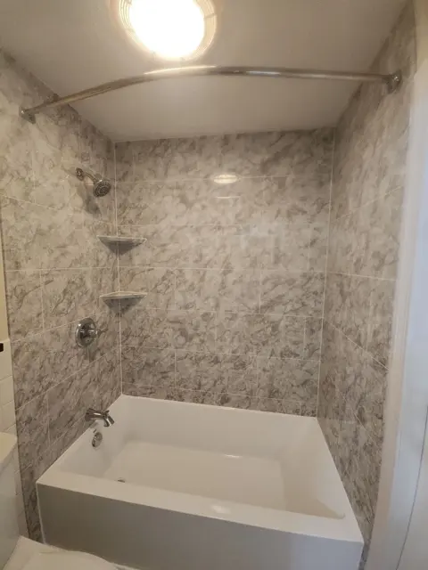
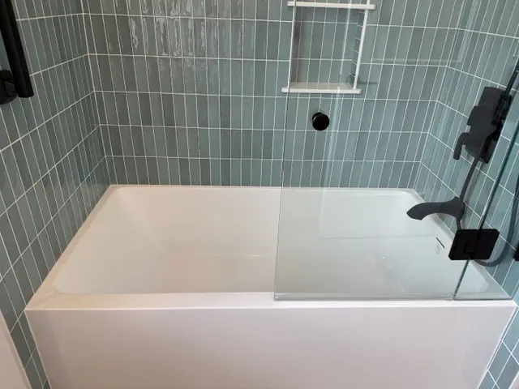
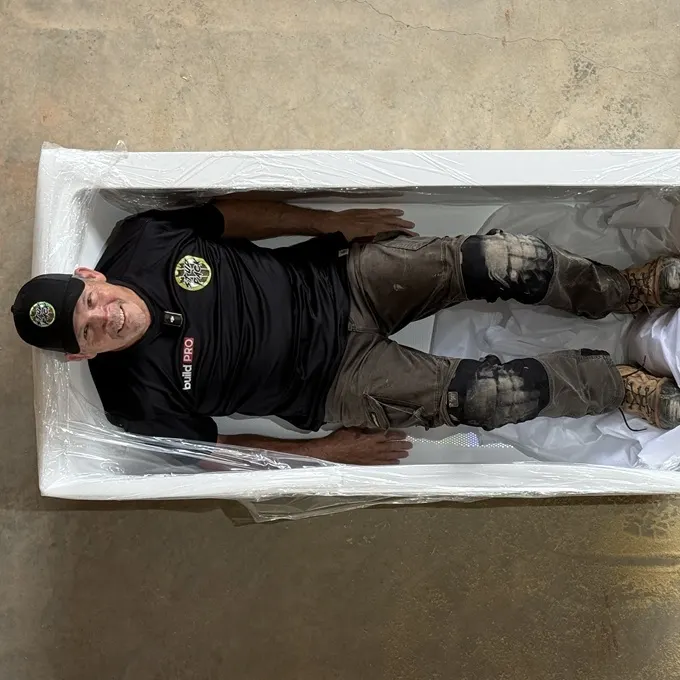
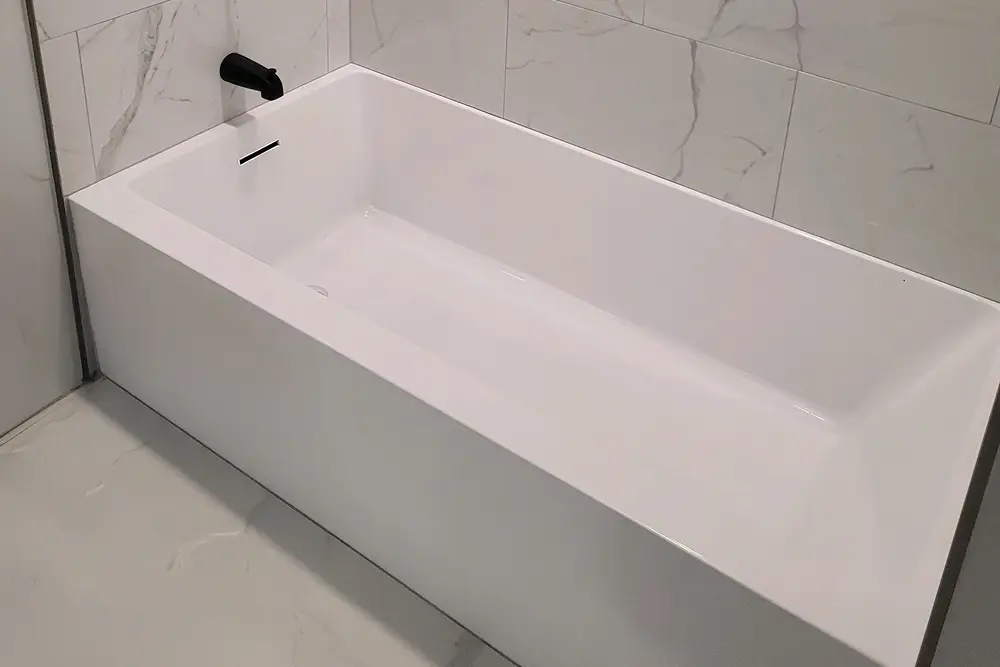
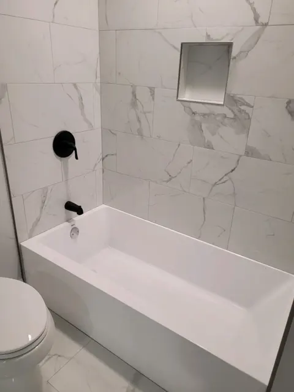
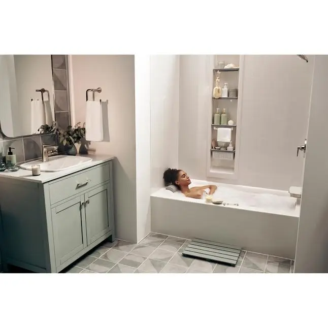
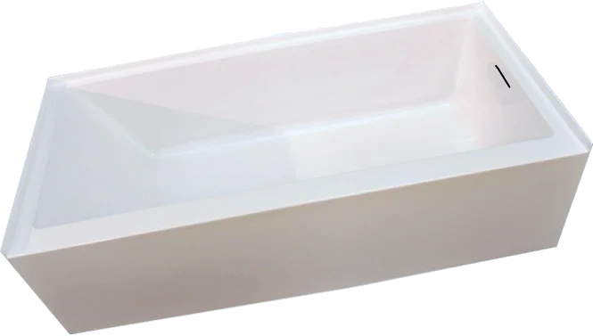

Blogs
Practical guides to choosing, installing and caring for a bathtub, and the science behind a safer, more comfortable bath.

Bathing a Dog at Home
Bathing a dog at home is easier with the Perfectub’s dog-friendly design from Brak Tub. The Perfectub also fits in a standard 60x30 alcove. Learn more.

Does a House Need a Bathtub?
Does a house need a bathtub? Find out why you should install a bathtub in your house and how the Perfectub from Brak Tub offers improved comfort. Learn more

Replacing Your Bathtub
If you’re replacing a bathtub, learn how you can save time with fewer installation materials using the PerfectTub. Call now to speak to a founding member.
Installing The Perfectub, From Start to Finish Part III
Learn bathtub installation tips for the final set of the Perfectub: from bedding the base to installing the drain and running the leak test. Read on for more.

Advantages of a Linear Overflow Drain
Designed with a linear overflow drain, Brak Tub’s Perfectub delivers a more modern appearance for a cleaner, more refined look ideal for today’s bathrooms.
Installing Your Perfectub, From Start to Finish Part II
Learn key bathtub installation tips, including leveling the tub footprint, ensuring full base support, dry-fitting drain routes, and choosing fittings to prevent leaks.
Installing Your Perfectub, From Start to Finish Part I
Follow this step-by-step guide to installing your Perfectub, from rough-in and drain planning to staging and prep. Choose Brak Tub and build with confidence.

How to Keep a Bathtub Looking New
Learn practical bathtub cleaning tips from Brak Tub for powerful stain removal and spotless results. Have your tub looking cleaner, brighter, fresher, and new.
Advantages of An Alcove Tub
Discover the benefits of an alcove soaking tub, featuring the Perfectub by Brak Tub. Learn about the space-saving features, low-cost installation, and others.

One Small Step for Mankind – Redesigned for Everyday Living
Discover how smarter alcove tub design improves safety, comfort, and accessibility for everyday living. Upgrade your bathing experience with Brak Tub today.
Do You Need a Bathtub For Resale Value? Here’s What Homeowners Should Know
Do you need a bathtub for resale value? Find out more from Brak Tub. Our options are practical and competitively priced. Call now to speak to a founding member.

Health Benefits of Hot Baths
Discover the health benefits of a hot bath, from muscle recovery to stress relief, and better sleep. Relax deeper at home with the Perfectub from Brak Tub.
What Features To Look For in the Best Bathtubs for Kids
Learn about the best bathtubs for kids and why you need them. The Perfectub is an innovative bathtub designed to prioritize safety. Call now to learn more.
National Bathtub Safety Month
National Bathtub Safety Month is the perfect time to upgrade your bathroom safety. Learn how Brak Tub prevents bathtub slips and falls with patented features.
What to Know Before Your Bathroom’s Bathtub Remodel
Learn what to consider before your bathroom bathtub remodel. Brak Tub provides the Perfectub as a safer and practical option that’s easy to install. Learn more.
Best Bathtub Material
Discover why Perfectub is made from the best bathtub material. Brak Tub’s Perfectub is made of high-quality acrylic. Call now to speak to a founding member.

The Perfectub: An Easy Access Bathtub Shower
Brak Tub provides easy access bathtub showers that are perfect for the elderly and can fit in a standard 60x30 alcove. Call now to speak to a founding member.

Is Perfectub ADA?
You know what you want in your bathroom. Make sure you choose the level of accessibility that’s right for you. Learn more about the advantages of the Perfectub.

The Perfectub Just Got “Perfecter”
The Perfectub now features a linear drain that lets bathers soak deeper. Experience innovative safety features and a sleek design. Find a showroom near you.